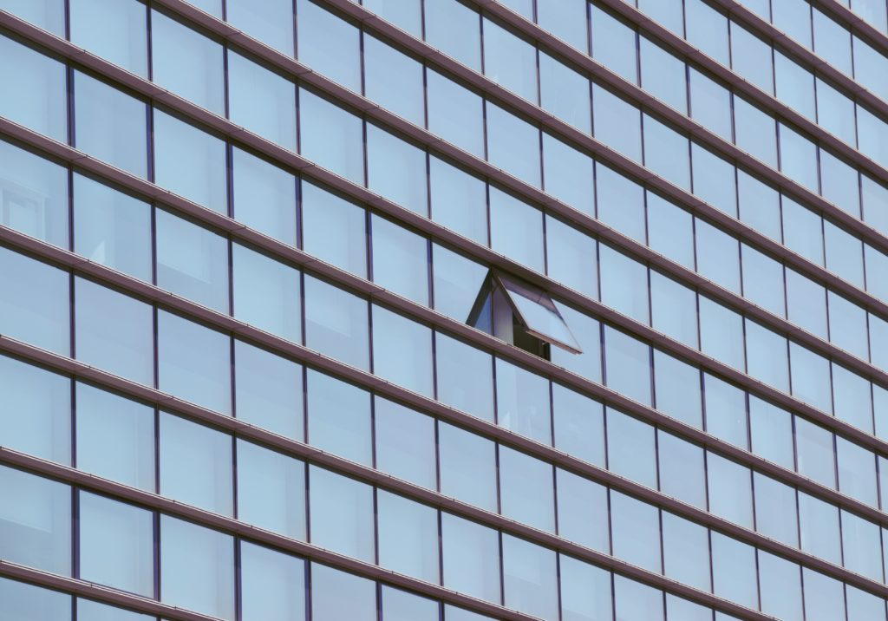
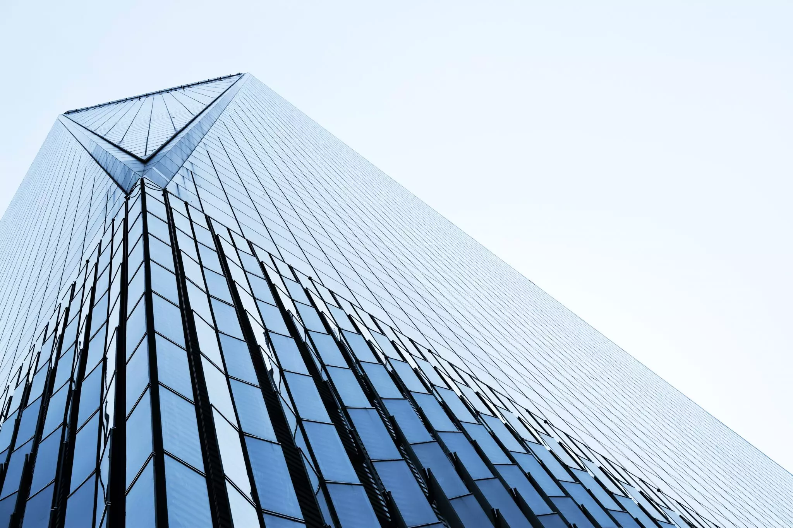

NOS METHODES DE TRAVAIL POUR RENDRE LE MONDE MEILLEUR
NOS METHODES DE TRAVAIL POUR RENDRE LE MONDE MEILLEUR
Mettre en place une culture du télétravail au sein d’une équipe qui a toujours travaillé sur site n’est pas une tâche facile. Azendoo, c’est une équipe de 25 personnes qui travaillent depuis bientôt 5 ans dans le même bureau à Bordeaux. Mais récemment certains d’entre nous ont du déménager de Bordeaux pour des raisons personnelles.
Même si vos collaborateurs ne se côtoient pas tous les jours il est très important de maintenir des liens entre chacun. Vous devez donc instaurer des moments quotidiens ou hebdomadaires afin de regrouper toute votre équipe pour un call ou pour partager une information. Ainsi, vous vous assurez que tout le monde avance dans la même direction. Par exemple vous pouvez organiser chaque lundi matin une réunion stand up (en visio-conférence pour les télétravailleurs) où chacun partage ses objectifs de la semaine.
Si une partie de votre équipe travaille à distance, le meilleur moyen de renforcer les liens entre les membres de votre équipe est de créer des équipes de travail de deux. Ces équipes travailleront en binôme sur un ou plusieurs projets, les poussant à mieux communiquer et se sentir indispensable au bon avancement du projet.
Même si vos collaborateurs ne se côtoient pas tous les jours il est très important de maintenir des liens entre chacun. Vous devez donc instaurer des moments quotidiens ou hebdomadaires afin de regrouper toute votre équipe pour un call ou pour partager une information. Ainsi, vous vous assurez que tout le monde avance dans la même direction. Par exemple vous pouvez organiser chaque lundi matin une réunion stand up (en visio-conférence pour les télétravailleurs) où chacun partage ses objectifs de la semaine.
Si une partie de votre équipe travaille à distance, le meilleur moyen de renforcer les liens entre les membres de votre équipe est de créer des équipes de travail de deux. Ces équipes travailleront en binôme sur un ou plusieurs projets, les poussant à mieux communiquer et se sentir indispensable au bon avancement du projet.
En effet travailler depuis chez vous vous fera moins bouger. Vous n’allez plus que de votre lit, à votre machine à café puis à votre bureau. Donc vous devez vous forcer à bouger pour garder votre corps éveillé. Que ce soit un footing le matin, une balade à midi ou un tour de vélo le soir, planifiez chaque jour au moins 30 minutes pour sortir et bouger.
BRUXELLES
Terre des Hommes - 2017
WEBSITE/APPBRUXELLES
Terre des Hommes - 2017
WEBSITE/APPBRUXELLES
Terre des Hommes - 2017
WEBSITE/APPNOUS CONTACTER
+32 484 26 77 94 +32 484 26 77 94 info@impact.orgNOUS CONTACTER
IMPACT asbl au 195, Chaussée de Vleurgat 1050 Ixelles | BelgiqueNOUS SUIVRE
Facebook Twitter VimeoNAVIGUER
Home Projet Equipe VisionS’INSCRIRE A NOTRE NEWSLETTER
Que des bonnes nouvelles, aucun spam n’arrivera jamais dans votre boite aux lettres !